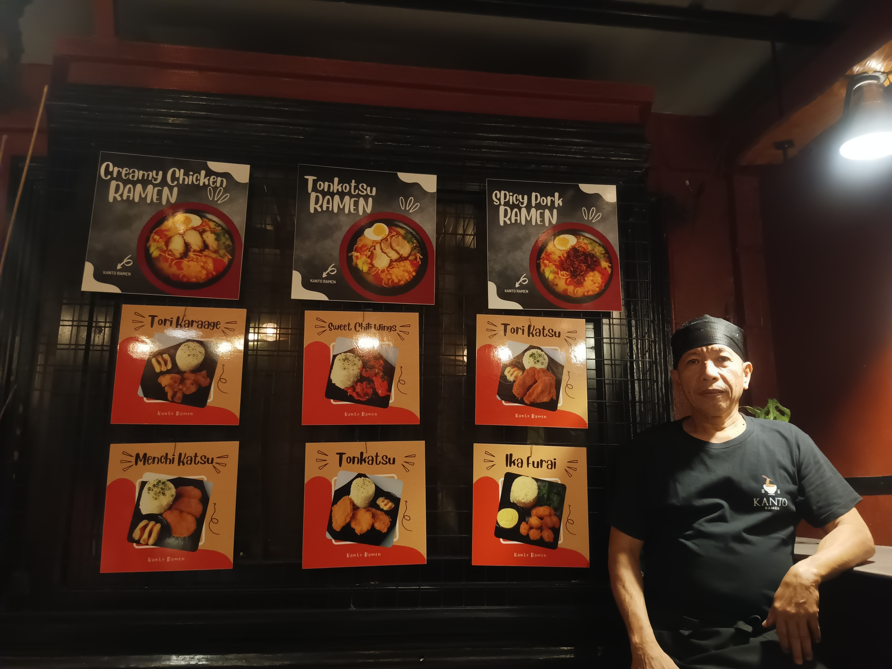
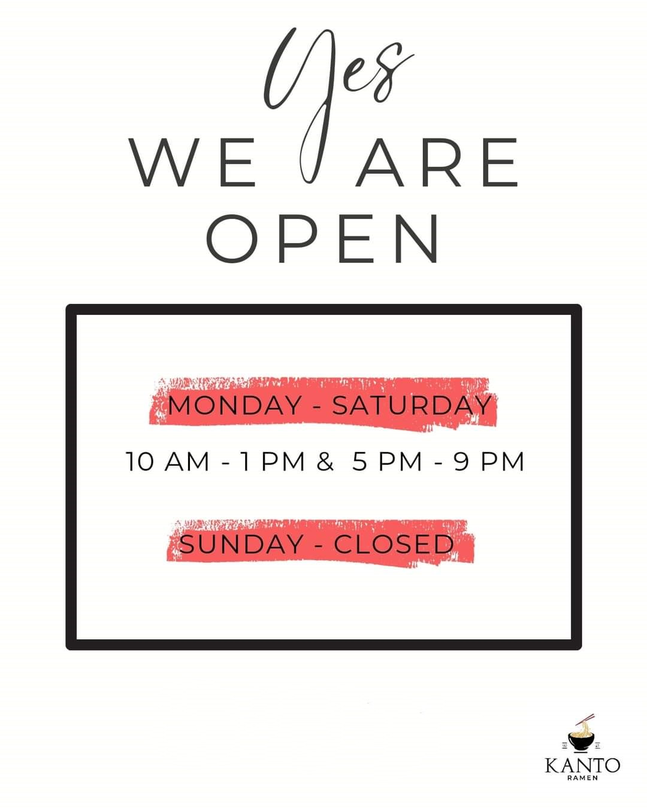

Kanto Ramen serves fresh three types of japanese ramen (Creamy Chicken Ramen, Tonkatsu Ramen, and Spicy Pork Ramen) and six main dishes of Kanto Ramen itself (Tori Karaage, Sweet Chili Wings, Tori Katsu, Menchi Katsu, Tonkatsu, and Ika Furai) with its fixed and cheap price Php 68 pesos only. Ever since it opened, many customers have been returning here to experience the delicious taste of ramen and the other dishes it offers.
Mr. Nolan Lecaroz is the owner and chef of the said japanese restaurant which was established on March 23, 2023 during post-pandemic. Kanto Ramen is located at Sitio Trozo, Barangay Ino, Mogpog, Marinduque. From the name itself "Kanto", it is located at the corner of the street of Sitio Trozo. He, his family and his waitress are friendly and easy to approach for assistance.
They are only open every Monday to Saturday at 10:00AM-1:00PM and 5:00PM-9:00PM and close only every Sunday. If you visit on its open schedule and you saw it closed, the ingredients and other equipments like chopsticks are currently not available at that time because they are ordering it. As of now, they are not accepting delivery orders and only serves dine-in and dine-out.